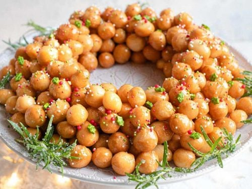
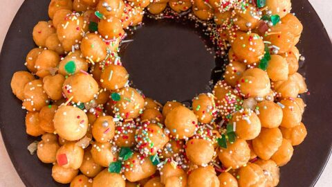

Struffoli
Struffoli is a traditional Italian dessert that consists of small, fried dough balls coated in honey and often decorated with colorful sprinkles or candied fruits. It is not technically a "cake" but is often shaped into a wreath or mound resembling a festive centerpiece. The dessert originates from Naples, but similar variations exist throughout Southern Italy. The name “struffoli” likely derives from the Greek word strongylos, meaning "round," reflecting the dish’s origins during the Greek colonization of Southern Italy. Struffoli has been a cherished Christmas dessert in Italy for centuries, symbolizing abundance, community, and festivity.
Traditional Struffoli Recipe
Ingredients
- For the Dough:
- 3 cups (375 g) all-purpose flour
- 1/2 cup (100 g) granulated sugar
- 1/2 tsp salt
- 3 large eggs
- 3 tbsp unsalted butter, melted
- Zest of 1 lemon and 1 orange
- 1 tsp vanilla extract
- 1 tbsp rum or liqueur (optional)
- For Frying:
- Vegetable oil (e.g., sunflower or canola) for deep frying
- For the Honey Glaze:
- 1 cup (240 ml) honey
- 1/4 cup (50 g) granulated sugar
- 1 tbsp lemon juice
- For Decoration:
- Rainbow sprinkles
- Candied cherries or fruits (optional)
- Sliced almonds or pistachios (optional)
Instructions
- Make the Dough:
- Combine flour, sugar, salt, lemon, and orange zest in a large bowl. Create a well in the center and add eggs, melted butter, vanilla extract, and rum.
- Mix until a dough forms. Knead on a floured surface for 5-7 minutes until smooth and elastic. Cover and let rest for 30 minutes.
- Shape the Dough:
- Divide the dough into small portions and roll each into thin logs (about 1/2 inch thick).
- Cut the logs into small pieces, roughly the size of a chickpea. Roll lightly between your palms for smooth edges.
- Fry the Dough:
- Heat oil in a deep pan to 350°F (175°C). Fry the dough pieces in small batches until golden brown (about 2 minutes). Remove with a slotted spoon and drain on paper towels.
- Prepare the Honey Glaze:
- In a saucepan, combine honey, sugar, and lemon juice. Heat over low heat until sugar dissolves and the mixture becomes a smooth glaze.
- Assemble the Struffoli:
- Transfer the fried dough balls to a large mixing bowl. Pour the honey glaze over the struffoli and toss gently to coat each piece.
- Shape into a wreath or mound on a serving platter. Decorate with sprinkles, candied fruits, and nuts.
Tips for Making Struffoli
- Keep Dough Small:
- Smaller pieces fry more evenly and ensure a light, crispy texture.
- Control Oil Temperature:
- Maintain oil at 350°F (175°C). Overheating may burn the dough, while lower temperatures can make it greasy.
- Fresh Honey:
- Use high-quality honey for the best flavor, as it is the primary coating ingredient.
- Even Decoration:
- Add decorations while the glaze is still warm to help them adhere better.
- Make Ahead:
- Struffoli can be prepared a day in advance. Store at room temperature, covered with plastic wrap, to keep them fresh.
- Creative Shapes:
- Form into festive shapes like wreaths, trees, or even a star for special occasions.
Best Season to Bake Struffoli

Struffoli is a Christmas tradition in Italy, making it a quintessential holiday dessert. Its golden, honey-glazed appearance, bright decorations, and sweet aroma bring warmth and cheer to winter celebrations. While it is most commonly made during the holiday season, Struffoli is also suitable for other festive occasions, like family gatherings or religious celebrations, where a touch of Italian tradition is appreciated.